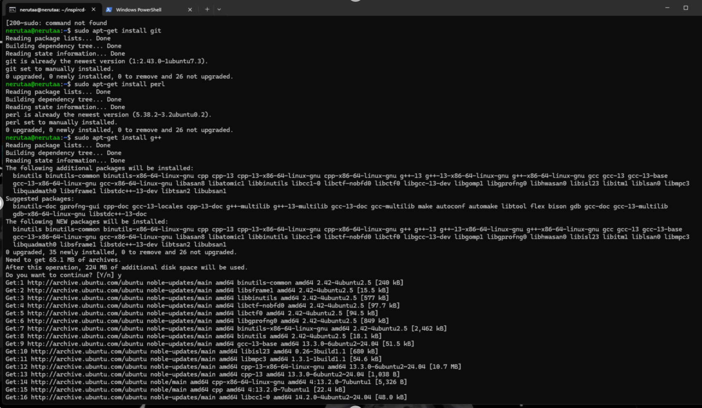

Installasjon av inspIRCd
Steg 1: installer dependencies
Kjør disse komandoene i ssh koblingen i command prompt:
1. sudo apt-get install git
2. sudo apt-get install perl
3. sudo apt-get install g++
4. sudo apt-get install make
Vi trenger git som versjonskontroll, Perl for å kjøre konfigurasjonsfilen, g++ for å kompilere C++, og make for å automatisere byggingen av programvaren.
hvis installasjonen stopper opp
Noen ganger kan pakker mangle, være korrupte eller avhengighetene gå i konflikt. Her er noen steg du kan følge for å fikse vanlige problemer:
1. Oppdater pakkelisten
Dette sikrer at systemet har den nyeste informasjonen om tilgjengelige pakker:
sudo apt update
2. Oppgrader eksisterende pakker
Noen ganger må gamle pakker oppdateres før ny programvare kan installeres:
sudo apt upgrade
3. Rydd opp i ødelagte pakker
Hvis det finnes ødelagte pakker, kan du forsøke å reparere dem:
sudo apt --fix-broken install
4. Rengjør pakkecachen
Hvis installasjonen feiler på grunn av korrupt cache, kan dette hjelpe:
sudo apt clean
Etter å ha kjørt disse kommandoene kan du prøve å installere programvaren på nytt. Dette er ofte alt som trengs for å få systemet i orden igjen.
Steg 2: Last ned inspIRCd
Det finnes flere forskjellige måter å laste ned inspIRCd på. En lettvint en blir å hente en av versjonene fra github. Klikk linken og sjekk hvilken som er nyest.
Latest Inspircd Release
1. hent ned en av versjonene, helst den nyeste fra linken over. bytt v4.8.0. med den versjonen du vil ha. bruk dette formattet:
wget https://github.com/inspircd/inspircd/archive/v4.8.0.tar.gz
disclaimer: jeg tar versjon 2.0.25 selv om den ikke er den nyeste.
2. Pakk det ut med:
tar xvf ./v.4.8.0.tar.gz
Dette gjør at vi har alle filene i en ny mappe med samme navn som versjonen.
Steg 3: Konfigurering av inspIRCd
1. Åpne mappen med kildekoden
Når du har pakket ut filen, må du gå inn i mappen som ble opprettet. Det gjør du med denne kommandoen:
cd inspircd-4.8.0
Merk: Som nevnt tidligere, bytt ut 4.8.0 med versjonsnummeret du faktisk lastet ned. For meg er det for eksempel:
cd inspircd-2.0.25
2. Start konfigurasjonen
Inne i InspIRCd-mappen, kjør denne kommandoen for å starte oppsettet:
perl ./configure
Du får noen spørsmål underveis – som oftest kan du bare trykke Enter for å fortsette. På slutten spør den om å sjekke for moduler, da kan du svare y.

3. Sjekk at konfigurasjonen ble riktig
Når alt er ferdig, vil du se en del linjer som bekrefter at systemet er klart:

Hvis du ser denne meldingen, kan du kjøre make. Det betyr at alt er satt opp som det skal.
Feilsøking
Hvis du får feil, sjekk at du har alle nødvendige pakker installert (perl, make, g++ osv.) og prøv kommandoen perl ./configure igjen.
Nå er installasjonen klar!
Nå er konfigurasjonen ferdig, og du kan gå videre til å bygge selve InspIRCd-serveren.